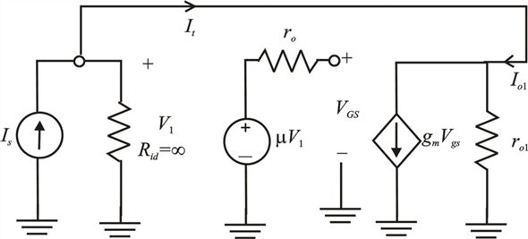
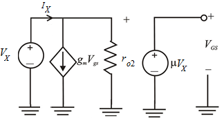

Step 1:
Refer to the circuit diagram of Figure P10.67 in the textbook.
(a)
The following is the small signal equivalent circuit of the circuit shown in Figure 1.

Figure 1
Step 2:
From the small signal equivalent circuit in Figure 2,
Thus, the feedback is negative.
Step 3:
(b)
It is given that the gain of the amplifier,  is infinite.
is infinite.
The dc voltage that appears at the drain of transistor,  is: .
is: .
It is given that the transistor,  is operating at an overdrive voltage of 0.2 V.
is operating at an overdrive voltage of 0.2 V.
Thus, the minimum value of bias voltage is: .
Step 4:
(c)
Redraw Figure 1 for the differential resistance .
.

Figure 2
From Figure 2, write the following equation:
Calculate the input resistance.
Thus, the small-signal input resistance  for the amplifier is.
for the amplifier is.
Step 5:
(d)
From small signal equivalent circuit in Figure 2, the output resistance is,
.